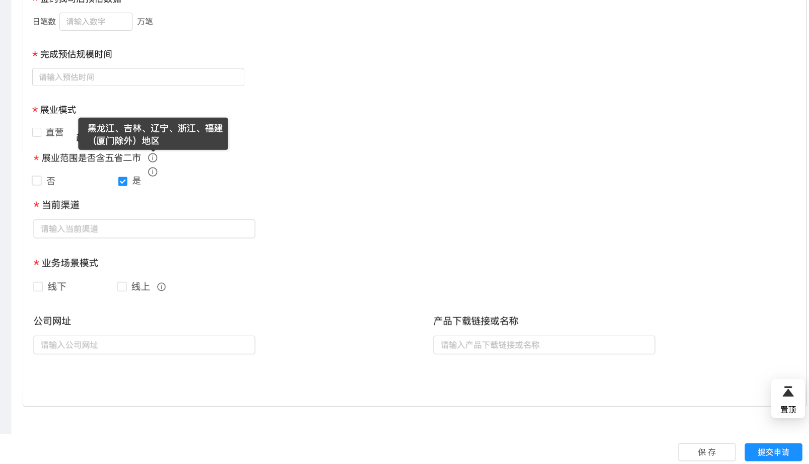
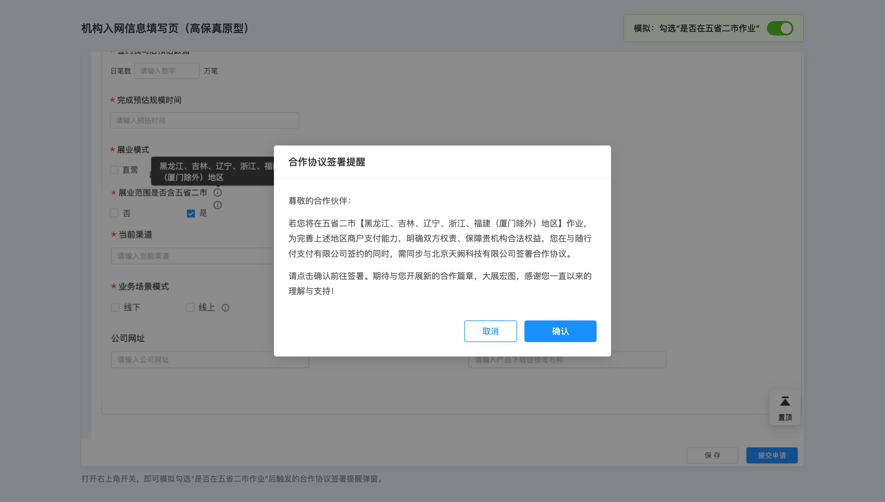
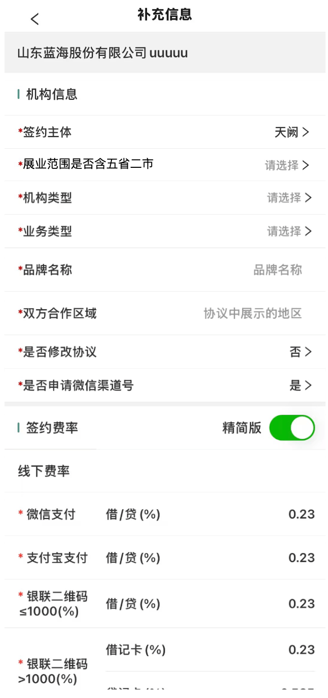
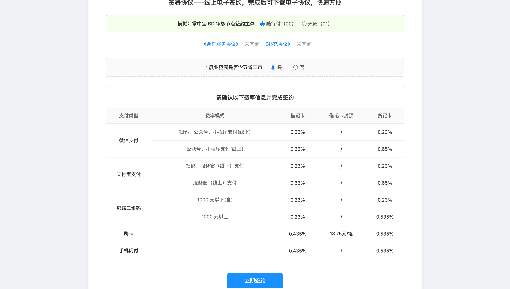
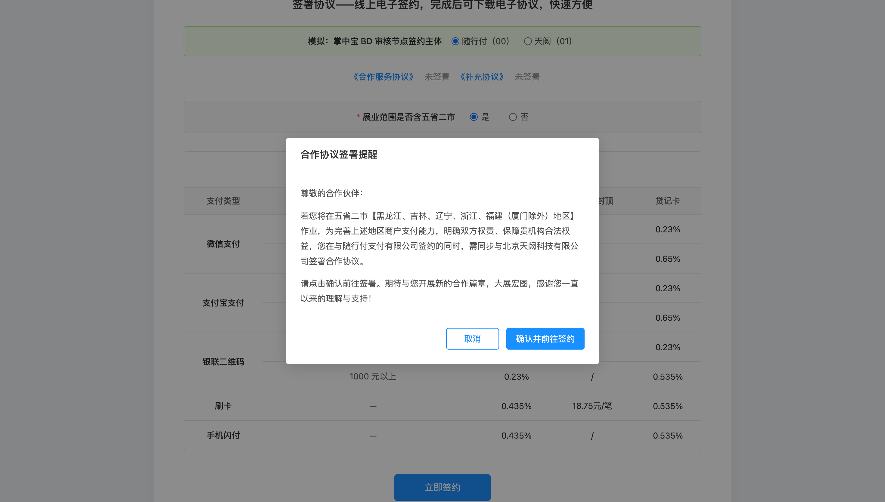

术语约定：「甲方」即「我司主体」（00 随行付 / 01 天阙 / 02 重庆鑫联）。
范围声明：坐标、回调、查询、下载、撤销、封装层映射、架构接口均沿用既有逻辑，本文不展开。
电子签章现状一次签署流程只能指定一个我司主体。机构入网场景中同一批协议的甲方主体可能不同（随行付、天阙），业务线只能拆成多个签约流程分别发起，签署体验割裂、状态对账成本高。
方案：签约文件逐份标注我司主体 + 签署方按主体分节点传入
推荐理由：与封装层透传逻辑一致（每个甲方的签署区绑定自己的协议文件），归属明确、校验简单、可扩展。
适用协议类型：机构入网协议。当机构属于「五省二市作业」范围时，需要同时签署随行付、天阙两份主体协议。
三个方案在「何时、在哪确认五省二市」上存在差异，推荐方案需业务侧结合掌中宝改造成本与用户体验最终确认。核心差异如下：
| 方案 | 五省二市确认时机 | 确认页面 | 签约主体选择 | 电子签约页处理 |
|---|---|---|---|---|
| 方案一：机构填写入网资料时确认 | CSP 机构资料填写节点 | CSP 机构资料页 | BD 审核节点展示可选主体 | 按 BD 选择渲染；随行付时展示五省二市单选，天阙时不展示 |
| 方案二：掌中宝 BD 审核时确认 | BD 审核节点 | 掌中宝 BD 审核页 | 与五省二市确认合并 | 按 BD 选择渲染；随行付时展示五省二市单选，天阙时不展示 |
| 方案三：机构协议签约时确认 | CSP 电子签约节点 | CSP 机构电子签约页 | BD 审核节点（或本页） | 在签约页首次必填五省二市；选「是」弹窗，选「否」直接跳转 |
机构在 CSP 填写入网资料时即确认是否属于五省二市作业范围。
| 元素 | 说明 |
|---|---|
| 字段名称 | 是否在五省二市作业 |
| 控件类型 | 开关，默认「否」；勾选后可取消 |
| 提示说明 | 长按/点击小叹号，弹窗展示五省二市具体省市范围（文案由产品/法务配置） |
| 勾选后交互 | 页面弹窗，标题「合作协议签署提醒」，正文：「尊敬的合作伙伴：若您将在五省二市【黑龙江、吉林、辽宁、浙江、福建（厦门除外）地区】作业，为完善上述地区商户支付能力，明确双方权责、保障贵机构合法权益，您在与随行付支付有限公司签约的同时，需同步与北京天阙科技有限公司签署合作协议。请点击签约链接完成协议签署。期待与您开展新的合作篇章，大展宏图，感谢您一直以来的理解与支持！」，按钮「取消 / 确认并前往签约」。 |


BD 在掌中宝审核时确认五省二市，并同步完成「签约主体」选择。只有确认「是」后，才展示「随行付（00）」选项；确认「否」时仅展示「天阙（01）」。
| 五省二市 | BD 选择 | 生成协议 | 甲方主体 |
|---|---|---|---|
| 是 | 随行付（00） | 随行付协议 + 天阙协议 | 00、01 |
| 是 | 天阙（01） | 天阙协议 | 01 |
| 否 | 天阙（01）仅可选 | 天阙协议 | 01 |
| 否 | 随行付（00）不可选/选择不生效 | — | — |
组合场景说明：若 CSP 未勾选五省二市，BD 即使误选「随行付」，提交时按「天阙（01）」处理；掌中宝侧可前端置灰不可选，或后端强制覆盖为 01。

方案三将「五省二市」确认时机后移至 CSP 机构电子签约页：

与方案一、二的差异：方案一、二在更早节点已确认五省二市，电子签约页仅做最终确认/展示；方案三则在电子签约页首次确认，对 CSP 页面改动最大，但掌中宝侧无需新增五省二市选项。
方案一、二中，CSP 机构电子签约页均根据掌中宝 BD 审核节点最终选择的「签约主体」渲染：
| BD 审核选择签约主体 | 电子签约页展示内容 | 点击「立即签约」行为 |
|---|---|---|
| 随行付（00） | 展示「展业范围是否含五省二市」单选（必填） | 选「是」→ 弹双主体确认窗 → 点「确认并前往签约」跳转封装层；选「否」→ 不弹窗，直接跳转封装层 |
| 天阙（01） | 不展示「展业范围是否含五省二市」 | 直接跳转封装层 |
说明： - 电子签约页以 BD 审核节点的最终选择为准。 - 仅当 BD 选择「随行付」时，才需要机构在签约页再次确认是否含五省二市；选择「天阙」时沿用单主体流程。 - 选择「是」后弹窗文案同 3.1 节。
| 元素 | 说明 |
|---|---|
| 字段名称 | 展业范围是否含五省二市 |
| 控件类型 | 单选（是 / 否），默认未选中 |
| 必填校验 | 未选择时点「立即签约」，提示「请先选择“展业范围是否含五省二市”后再进行签约」 |
| 选择「是」后交互 | 弹窗，标题「合作协议签署提醒」，按钮「取消 / 确认并前往签约」；点击确认后跳转封装层 |
| 选择「否」后交互 | 不弹窗，直接跳转封装层 |

sequenceDiagram
autonumber
actor M as 商户
participant CSP as CSP机构资料页
participant BD as 掌中宝BD审核
participant SYS as 业务系统
participant ES as 电子签章封装层
participant CH as e签宝/法大大
M->>CSP: 填写机构资料
alt 勾选五省二市
CSP->>CSP: 弹窗提示双主体协议
CSP->>SYS: 提交资料（isFiveProvinces=true）
SYS->>BD: 生成BD审核工单
BD->>BD: 展示「签约主体」选择（00/01）
alt BD选随行付
BD->>SYS: 提交（subjects=[00,01]）
else BD选天阙
BD->>SYS: 提交（subjects=[01]）
end
else 未勾选
CSP->>SYS: 提交资料（isFiveProvinces=false）
SYS->>BD: 生成BD审核工单
BD->>SYS: 提交（subjects=[01]）
end
SYS->>SYS: 按主体分组生成文件与签署区
SYS->>SYS: 校验主体/文件/印章配置
alt 校验失败
SYS-->>BD: 返回明确错误提示，停留审核页
else 校验通过
SYS->>ES: 创建签约并获取链接
ES->>CH: 按渠道发起签署
alt 渠道返回异常
CH-->>ES: 错误码（1004/1435002/...）
ES-->>SYS: 透传业务化提示
SYS-->>BD: 展示错误，可修正后重试
else 渠道成功
CH-->>ES: 返回签署链接/流程ID
ES-->>SYS: 返回签约链接
SYS-->>M: 推送签署链接
end
end
CSP / 掌中宝不直接对接 e签宝/法大大，而是通过调用内部电子签章封装层的「创建签约并获取链接」接口完成签署。本章说明多主体场景下，相较于单主体存量调用，需要调整哪些参数、字段如何取值、以及传值规则。
| 项 | 说明 |
|---|---|
| 接口路径 | POST {封装层}/sign-flow/create（路径沿用既有接口，以实际封装层地址为准） |
| 调用方 | CSP / 掌中宝等业务系统 |
| 服务方 | 电子签章封装层，负责将「我司主体」映射为对应渠道的账号、印章，并向 e签宝/法大大发起真实请求 |
| 核心变化 | 多主体签署时，必须在「签约文件」和「签署方信息」中显式传入「我司主体」，否则封装层无法识别文件归属与签署方主体 |
| 字段 | 位置 | 必填 | 类型 | 取值 | 变更 | 说明 |
|---|---|---|---|---|---|---|
| 我司主体 | 签约文件[].我司主体 | 是 | String | 00 随行付 / 01 天阙 / 02 重庆鑫联 |
新增 | 指定该份协议的甲方归属；逐文件必传，无全局默认值 |
| 我司主体 | 签署方信息[].我司主体 | 是 | String | 00 / 01 / 02 |
新增 | 标识该签署方代表的我司主体；甲方静默签、乙方手动签均需传入 |
| 我司主体 | 签署区信息[].我司主体 | 否 | String | 00 / 01 / 02 |
预留 | 当前阶段不实现；未来同协议多位置落章时使用 |
| 渠道类型 | 渠道类型 | 是 | String | esign / fadada |
限制 | 多主体场景当前仅支持 esign；fadada 一次流程仅支持单一甲方 |
| 文件顺序 | 签约文件数组顺序 | — | — | — | 约束 | 同主体文件必须连续排列，不同主体分组传入 |
注：应用标识、业务单号、签约文件内容/名称、签署区坐标、乙方企业/经办人信息、签约链接配置 等其他字段均沿用既有逻辑，本章不再赘述。
00 随行付 / 01 天阙 / 02 重庆鑫联。{00,01,02}；一次流程去重后最多支持 8 个我司主体。[00文件1, 00文件2, 01文件1]。是否自动落章=true）：只传「渠道企业账号ID」（customerId / orgId），不传企业/经办人信息。是否自动落章=false）：传企业名称、统一社会信用代码、经办人姓名、经办人手机号等，不传「渠道企业账号ID」。1435002（机构自动签署只允许传账号ID）。是否自动落章=true，印章ID取该主体配置值。00 随行付，再 01 天阙，最后 02 重庆鑫联）传入签约文件；封装层按传入顺序透传生成渠道文件顺序，不做重排。一次批量签署 4 份协议、2 个甲方（随行付、天阙）、1 个乙方：
{
"应用标识": "tianque",
"业务单号": "multi-partner-esign-003",
"渠道类型": "esign",
"签约文件": [
{ "协议外部ID": "A1001", "协议模板": "合作服务协议", "文件路径": "/files/A1001_sxf.pdf", "我司主体": "00" },
{ "协议外部ID": "A1002", "协议模板": "补充协议", "文件路径": "/files/A1002_sxf.pdf", "我司主体": "00" },
{ "协议外部ID": "B1001", "协议模板": "合作服务协议", "文件路径": "/files/B1001_tq.pdf", "我司主体": "01" },
{ "协议外部ID": "B1002", "协议模板": "补充协议", "文件路径": "/files/B1002_tq.pdf", "我司主体": "01" }
],
"签署方信息": {
"签署方类型": "01",
"签约人类型": "01",
"企业名称": "xxx商户",
"统一社会信用代码": "9135xxxx",
"经办人姓名": "张三",
"经办人手机号": "13800138000"
},
"签署区信息": [
{ "协议外部ID": "A1001", "页码": "1", "坐标X": "300", "坐标Y": "200" },
{ "协议外部ID": "A1002", "页码": "1", "坐标X": "300", "坐标Y": "200" },
{ "协议外部ID": "B1001", "页码": "1", "坐标X": "300", "坐标Y": "200" },
{ "协议外部ID": "B1002", "页码": "1", "坐标X": "300", "坐标Y": "200" }
],
"签约链接配置": {
"是否需要登录": false,
"经办人手机号": "17604861425"
}
}
传参顺序即展示顺序：上述示例业务层按随行付→天阙顺序传入，签署页按该顺序展示。业务层需按固定主体顺序（先
00后01再02）传参；若业务层乱序传入，签署页将按业务层传入顺序展示，封装层不做重排。
| 错误示例 | 问题 | 正确做法 |
|---|---|---|
| 漏传某份文件的「我司主体」（误以为还有全局兜底） | 校验不通过，创建失败 | 每份文件都必须指定「我司主体」，无全局默认值 |
| 同一「协议外部ID」下，不同签章区传了不同「我司主体」 | 当前阶段会触发校验失败 | 如需同协议多甲方，走预留的「签署区维度我司主体」方案；否则同一协议只传一个甲方 |
| 把我司主体编码写成中文「随行付」 | 字段类型错误，校验不通过 | 使用编码 00 / 01 / 02 |
| 多主体场景仍走法大大渠道 | 渠道不支持，创建失败 | 多主体仅支持 e签宝；法大大保持单主体调用 |
上述请求示例传入后，封装层会生成如下 e签宝结构：
{
"docs": [
{ "fileId": "F1", "fileName": "合作服务协议-随行付.pdf", "order": 1 },
{ "fileId": "F2", "fileName": "补充协议-随行付.pdf", "order": 2 },
{ "fileId": "F3", "fileName": "合作服务协议-天阙.pdf", "order": 3 },
{ "fileId": "F4", "fileName": "补充协议-天阙.pdf", "order": 4 }
],
"signers": [
{
"signerType": 1,
"signFields": [
{ "fileId": "F1", "normalSignFieldConfig": { "autoSign": true, "assignedSealId": "{随行付印章ID}", "signFieldPosition": { "positionPage": "1", "positionX": 300, "positionY": 200 } } },
{ "fileId": "F2", "normalSignFieldConfig": { "autoSign": true, "assignedSealId": "{随行付印章ID}", "signFieldPosition": { "positionPage": "1", "positionX": 300, "positionY": 200 } } }
]
},
{
"signerType": 1,
"signFields": [
{ "fileId": "F3", "normalSignFieldConfig": { "autoSign": true, "assignedSealId": "{天阙印章ID}", "signFieldPosition": { "positionPage": "1", "positionX": 300, "positionY": 200 } } },
{ "fileId": "F4", "normalSignFieldConfig": { "autoSign": true, "assignedSealId": "{天阙印章ID}", "signFieldPosition": { "positionPage": "1", "positionX": 300, "positionY": 200 } } }
]
},
{
"signerType": 1,
"orgSignerInfo": { "orgName": "xxx商户", "orgInfo": {}, "transactorInfo": {} },
"signFields": [
{ "fileId": "F1", "normalSignFieldConfig": { "autoSign": false, "signFieldPosition": { "positionPage": "1", "positionX": 100, "positionY": 200 } } }
]
}
]
}
| 校验项 | 规则 | 拦截提示 |
|---|---|---|
| 我司主体必传且合法 | 逐文件、逐签署方校验已传且取值 ∈ {00,01,02} | 「签约文件[{序号}]未指定我司主体」 / 「我司主体取值不合法，仅支持00随行付/01天阙/02重庆鑫联」 |
| 甲方数量上限 | 去重后我司主体数 ≤ 8 | 「一次签约流程最多支持8个我司主体」 |
| 印章/账号配置 | 每个我司主体的印章ID、渠道企业账号ID 必须已配置 | 「主体[{主体名}]的电子印章/账号未配置，请联系运营」 |
| 签署方总数 | 甲方数 + 乙方数 ≤ 10（e签宝上限） | 「签署方数量超出上限」 |
| 签署区总数 | 全流程 ≤ 30 组（沿用） | 「最多传入30组签署区信息」 |
| 文件未按主体连续传入 | 同主体文件必须连续排列 | 「同一主体的文件需连续传入」 |
| 签署方主体与文件主体不匹配 | 签署区关联的文件主体须与签署方主体一致 | 「签署方主体与文件主体不一致」 |
| 参数名 | 类型 | 说明 |
|---|---|---|
| 签署流程ID | String | 封装层流程 ID |
| 签署链接 | String | 签署信息确认页 URL |
| 参数名 | 类型 | 说明 |
|---|---|---|
| 签署方信息[].我司主体 | String | 签署方为我司时返回，多个甲方返回多组；取值 00/01/02 |
业务线可用于按主体归档、对账及追溯。
| 场景 | 提示 | 处理 |
|---|---|---|
| 主体未传 | 「签署方信息未指定我司主体」 | 拦截，返回创建失败 |
| 主体取值非法 | 「我司主体取值不合法，仅支持00随行付/01天阙/02重庆鑫联」 | 拦截 |
| 主体数超限 | 「一次签约流程最多支持8个我司主体」 | 拦截 |
| 文件未按主体连续传入 | 「同一主体的文件需连续传入」 | 拦截 |
| 签署方主体与文件主体不匹配 | 「签署方主体与文件主体不一致」 | 拦截 |
| 印章/账号未配置 | 「主体[XX]的电子印章/账号未配置，请联系运营」 | 拦截 |
| 场景 | 渠道错误 | 业务层处理 |
|---|---|---|
| 同一 bizNo 重复发起 | 法大大/封装层 Duplicate entry ... t_biz_no_app_un |
幂等返回已创建流程的签署链接，不重复创建 |
| 法大大签章坐标为空 | 1004 |
透传「签章坐标不能为空，请检查坐标配置」 |
| e签宝盖章位置超出文件范围 | 1435002 |
透传「签章坐标超出文件范围，请检查页码/坐标」 |
| e签宝静默签传 orgSignerInfo | 1435002（机构自动签署只允许传账号ID） |
封装层转换：静默签甲方只传 customerId/orgId，不透传 orgSignerInfo |
| 印章无跨企业授权 | — | 回退默认章；上线前需完成主体印章授权配置并纳入验收 |
| 渠道超时/服务异常 | — | 提示「签署服务暂不可用，请稍后重试」，bizNo 不变重试幂等 |